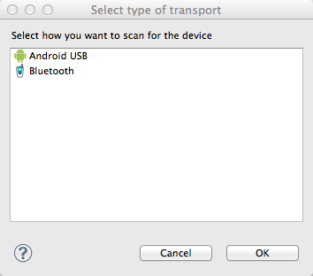
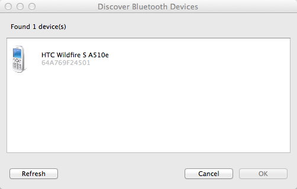
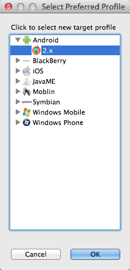

MoSync makes it easy to scan for nearby devices and connect to them using Bluetooth. Once you have connected to your device, you will be able to send your application to it over Bluetooth.
To use the MoSync Send to Device service:
Click the Select Target Device icon (or select Scan for Device from that icon's drop-down menu):
The transport selection dialog will appear.

Select Bluetooth. If you have correctly configured your Bluetooth stack, MoSync will start a search for all discoverable Bluetooth devices in range and display the ones that it finds:

Highlight the device that you want to send your application to and click OK.
The MoSync IDE will now check that the selected device has the OBEX service available for binary transfers (this service makes it possible for MoSync to send the application directly to the device).
When the OBEX service is detected, the Select Preferred Profile window will appear:

Select the MoSync profile you want to associate with the target device. Usually, this will be the profile for the target device, e.g., an Android profile for the HTC Wildfire S that was detected in the above screenshots. However, if there is no suitable profile for your device, you can choose another compatible profile. Click OK to associate the chosen device profile with the target device.
When the OBEX service is detected, MoSync automatically completes the device selection by associating the device profile currently selected in the project with the target device. For more about this association, including how to check its current setting and how to change it, see Sending to a Device.
MoSync does not support sending via Bluetooth on Mac OS X 10.8 or higher.
We have noted some issues with the pairing of Windows Mobile devices to Windows computers.
The first issue seems to happen if the device has been previously paired with the computer outside of MoSync. If you are having problems sending application packages files from the MoSync SDK to a Windows Mobile bluetooth device, try unpairing the device in the Windows Bluetooth Device Manager or its equivalent, and then searching for it again in the MoSync SDK.
The second issue relates to Windows Active Sync and/or HTC Active Sync. These applications can cause problems when trying to connect Windows Mobile devices to the computer via MoSync and Bluetooth. Try disabling Active Sync if you are experiencing connection or file transfer issues.